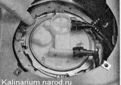
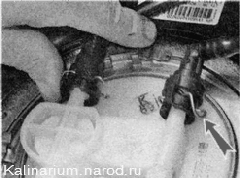
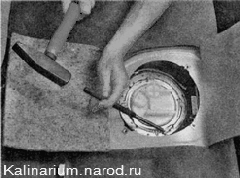
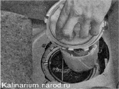
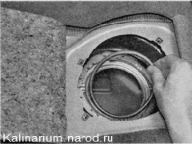
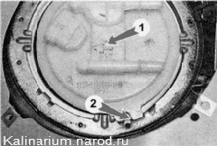

Топливный модуль - снятие и установкаСнятие 1. Подготавливаем автомобиль к выполнению работы. 2. Сбрасываем давление топлива. После сброса давления в топливопроводе остается небольшое количество топлива. 3. Подняв подушку заднего сиденья, отгибаем кромки коврика и шумоизоляции над крышкой люка. Крестовой отверткой отворачиваем четыре самореза крепления крышки люка и снимаем крышку. 4. Удаляем скопившуюся пыль и грязь с топливного модуля. 5. Освободив фиксатор, отсоединяем колодку проводов от топливного модуля. 
6. Сжимая пружинные фиксаторы, отсоединяем наконечники трубок топливопроводов от топливного модуля. 
7. Отводим трубки от модуля. 8. Легкими ударами молотка через бородок отворачиваем против часовой стрелки прижимное кольцо топливного модуля.  9. Извлекаем топливный модуль из бака.  Вынимая топливный модуль, не погните рычаг датчика указателя уровня топлива. Для этого слегка наклоните модуль и аккуратно выведите поплавок из отверстия бака. 10. Поврежденную уплотнительную прокладку заменяем. 
Установка 1. Аккуратно заведя поплавок в отверстие бака, устанавливаем топливный модуль и ориентируем его в баке так, чтобы стрелка 1 на крышке топливного модуля была направлена назад (по ходу автомобиля), а выступ 2 вошел в паз фланца приваренного к топливному баку. 2. Поворачиваем прижимное кольцо к баку и поворачиваем по часовой стрелке до упора. 3. Убедившись в надежном креплении топливного модуля, подсоединяем к нему наконечники трубок топливопровода и колодку жгута проводов. 4. Включаем зажигание на 5 си проверяем герметичность соединений. При необходимости проверяем соединения топливопровода. 5. По завершении работы устанавливаем крышку люка и подушку заднего сиденья на место. |